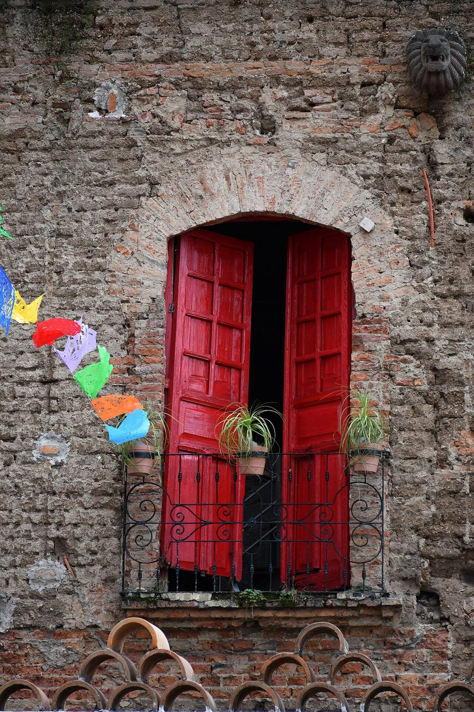
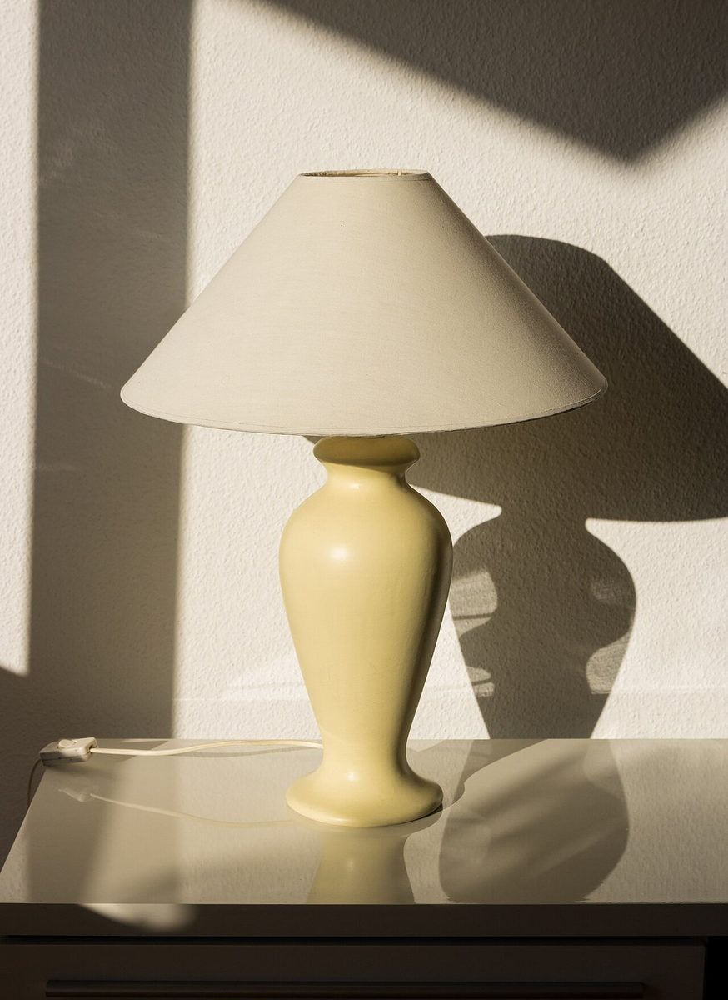
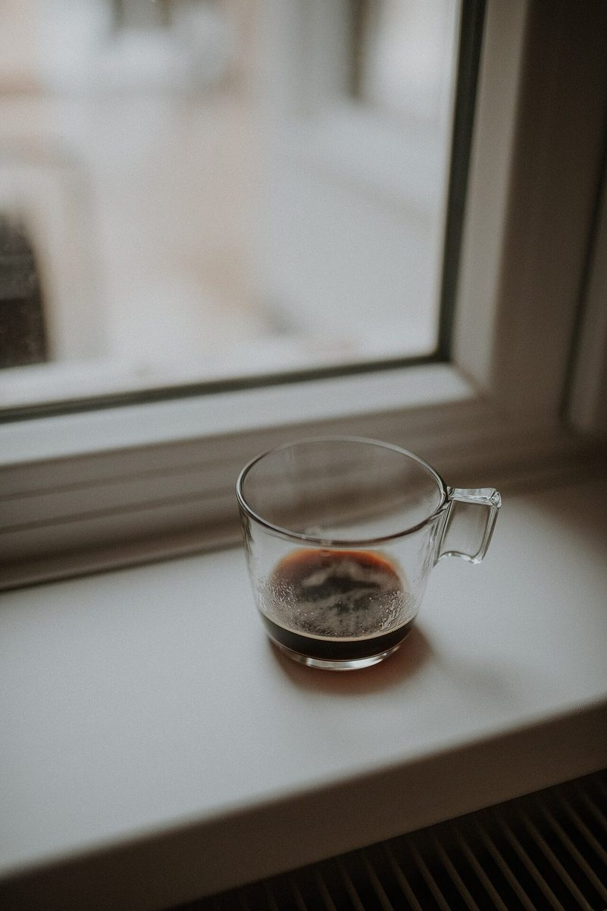
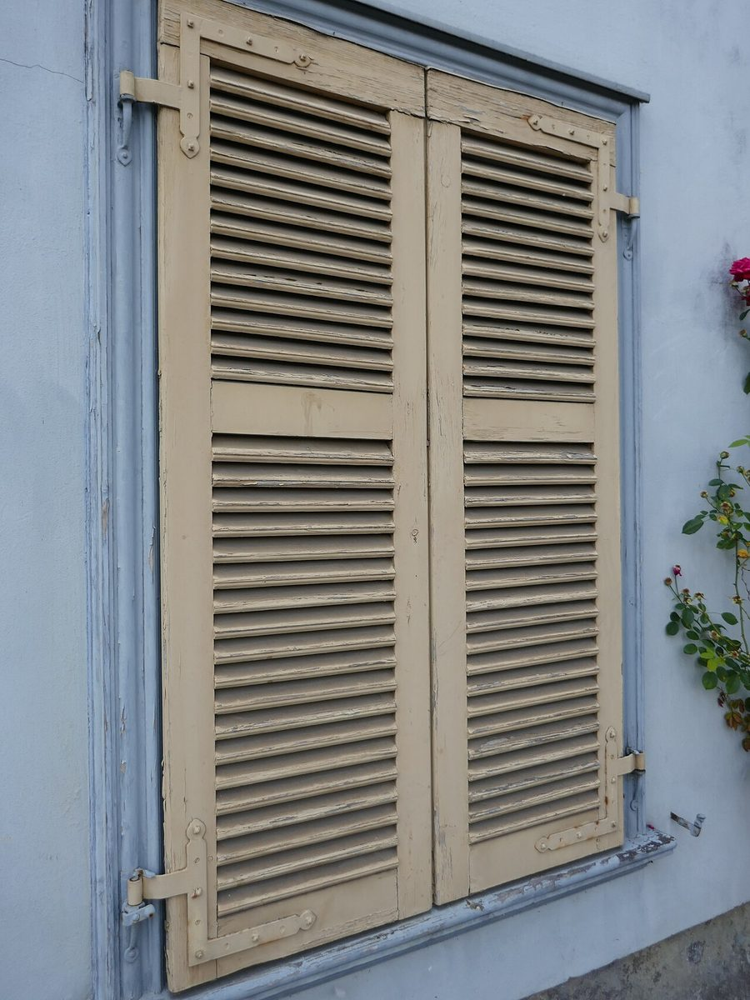

15°
店のこと
お店について確認できているのは、所在地とInstagramのアカウントだけです。
確認できていること
- 店名は「Senri Maison Coffee」、業種はカフェ(コーヒー)
- 所在地は大阪府吹田市上山手町63-15(〒565-0841)
- 電話番号はなし。連絡はInstagramから
- 営業時間・定休日・メニュー・価格・ご予約・駐車場は準備中
下の「想像してみる」は、制作側が想像して書いたものです。お店の実際の様子・考え・メニューとは関係がありません。

想像してみる
板一枚ぶんの、すきま。
屋号の由来は分かりません。制作側は、鎧戸の羽根板の隙間から光が細く差し込むような、そんな一場面を思い浮かべて写真を選びました。実際のお店の姿ではなく、あくまで制作側の連想です。


